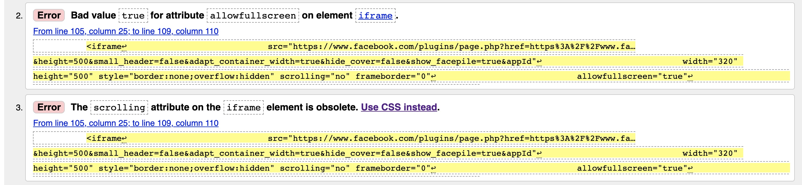
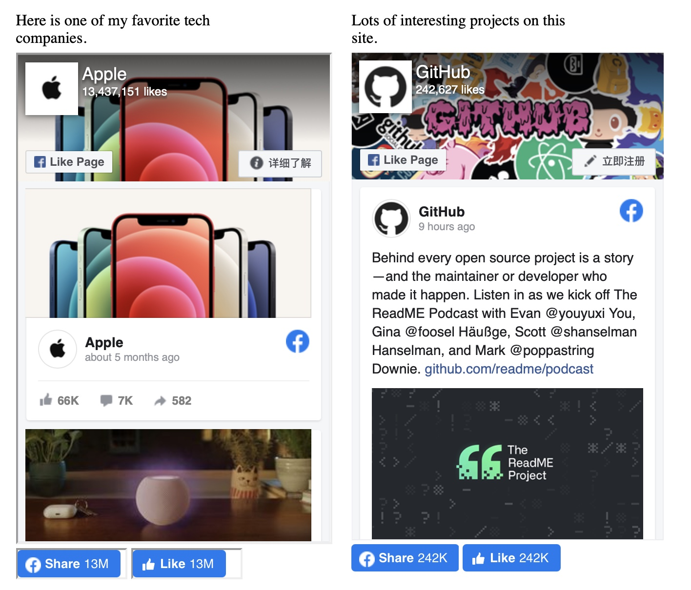
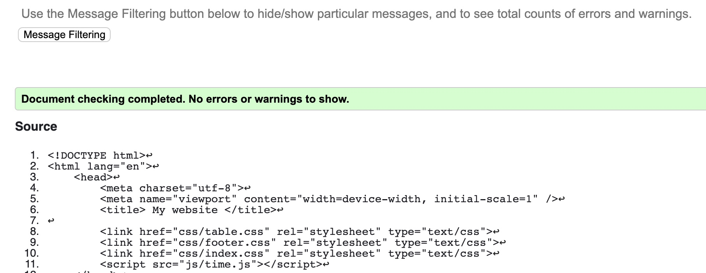

1. Some bugs from facebook developer tools.


The left one(Apple one) is bug-free. However, the area of the like button has some shadow for some
reasons.
Therefore, I prefer to display the right one(Github one).
2. All other pages are bug-free just like the following image.
